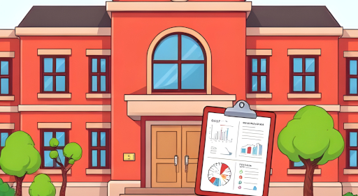

100 Jahre AHS Kenyongasse


Wie viele Kinder haben alle Lehrpersonen zusammen?
Wie viele Nationalitäten haben die Schülerinnen und
Schüler der AHS?
Was ist der höchste Raum im Gebäude?
Diese und viele weitere spannende und
interessante
Fragen warten auch euch und eure Klassen in 3 spannenden und kunterbunt gemixten Kahoots rund um unsere
Schule und Schulgemeinschaft!
Beantwortet so viele Fragen im Kenyon-Kahoot, wie ihr könnt! ACHTUNG: Auch Schnelligkeit zählt!⏱️
WICHTIG: Bitte dort mit Microsoft anmelden!